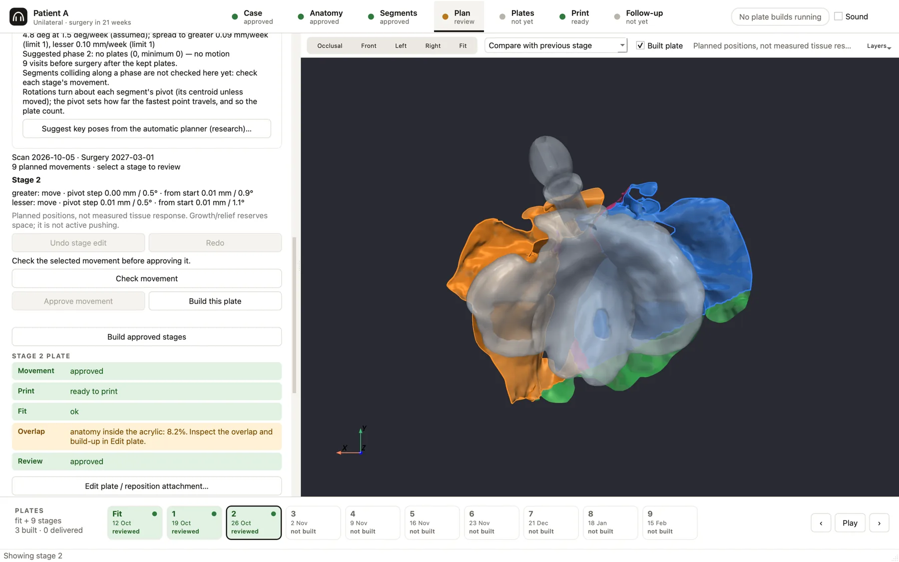
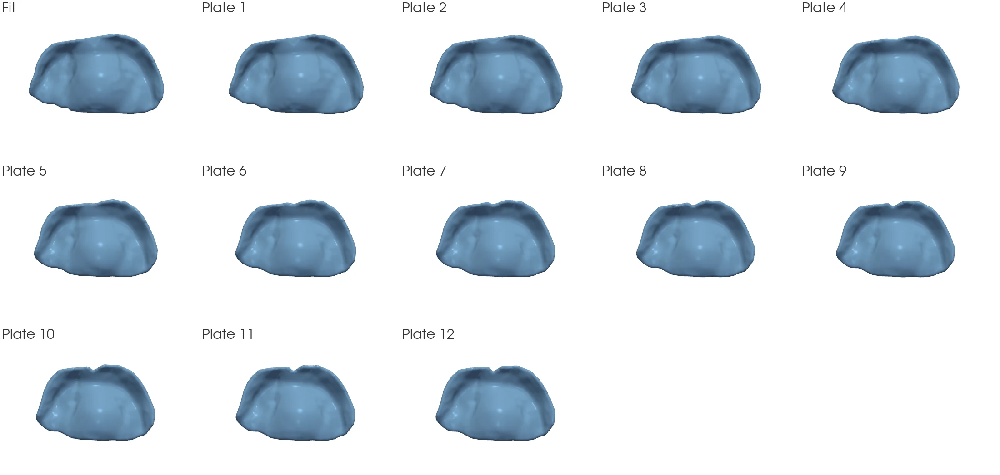

From an infant's intraoral scan to a series of NAM plates.
MoldStudio reads an intraoral scan, or a scan of a stone model, and finds the cleft and the alveolar segments. The clinician drags each segment to where it should end up and draws where each plate should end. The app divides that movement into plates timed to the visits before surgery, checks every plate, and prepares the plates for 3D printing or thermoforming. The clinician reviews, edits and approves each step.

What's new
Since the first public release, MoldStudio has been rebuilt around one real right unilateral case, scanned from a stone model. The pictures on this site come from that case. All of it is in MoldStudio Alpha3, which you can download now.

Close a unilateral cleft with handles
A Movement window shows the arch from the mouth. Drag the greater segment's tip to where it should end, the diamond to where its curve starts, and the lesser segment's dot to set how far it comes across. Both segments approximate while the greater curves over into the arch, the curve graded from the tuberosity to the tip. Play runs the stages, and the window reports the cleft gap and the travel at every stage.
Pose each segment as a rigid body
Under the curve, each segment can be moved forward, across and up, and turned, tilted and rolled. Drag a crest line to move a segment, or hold Shift to turn it about its back end. The directions are anchored on the anatomy: forward is perpendicular to the line between the two tuberosities.
Soft tissue follows its own segment
Each part of the scan moves with the segment it belongs to. The cleft lining no longer stretches like one membrane between the segments, so the predicted tissue stays smooth and does not fold.
Draw each plate's border
After the movement is posed, the clinician draws where the plate ends on each stage's predicted tissue. The first stage's line can be copied forward and edited. Each plate is cut to its line plus an allowance (1.5 mm in this case) and its edge is rounded. A piece cut off inside the line holds the plate.
A plate editor that paints, then applies
Add, remove and smooth brushes work on a depth map of the plate, so an edit never folds the surface. Strokes can be painted first and applied together. Wall thickness can be set uniform or graded, with anything under the 1.0 mm print floor shown in red.
See what a plate does to the tissue
The editor estimates where the plate presses, where it leaves a gap, and how both change with an edit, with arrows for the push on each segment. The tissue model's stiffness is an assumption, because no infant tissue data exists, and the window says so.
Cut out, grow and shrink
Cut out removes a painted region, for example a window over a sore spot. Plate edge grows or shrinks the outline where the stage has a drawn border. An edit can be carried to every later plate that has not been delivered. Each plate lists the edits it carries, and each one can be removed.
Arms when you want them; a closer seat
New cases build plates without retention arms. The editor adds them, either where the app places them or at sites the clinician picks. Seat closely sizes the cleft block-out to the cleft instead of over-filling the tips, which raised contact on the greater segment from 79 % to 86 % on plate 0 of this case.
Stone models and suggested cleanup
On import, the app offers to remove a model's base and plinth walls and any loose specks. A preview shows exactly what would go, and declining is recorded.
Undo everywhere
Undo and redo buttons on the step rail cover cleaning, segment rebuilds, marks, drawn borders and arm sites. Each tooltip says what will be undone. The Movement window has its own undo for handle drags.
Turn the case around
The same case in 3D: the predicted tissue the app builds plates on, at the start and at week 12, with the fit plate and plate 12 seated on it. Drag to rotate and scroll or pinch to zoom.
Greater segment Lesser segment Plate
Loading the 3D view…
How it works
Seven guided steps. At each one the app builds a proposal, and the clinician inspects it, edits it and approves it. Sending a step back withdraws its approval and every approval after it, and the app says which.
Case
Import a de-identified .stl, .ply or .obj scan of the upper jaw, intraoral or of a stone model. Accept or decline the suggested cleanup (a model's base and walls, loose specks), and remove the flaps that scanner stitching leaves. Record the diagnosis, the arch and the visit and surgery dates. Left/right and mirroring cannot be measured from a scan, so they are the clinician's assertions.
Anatomy
A classifier fits the alveolar crest, counts the interruptions along it (intact, unilateral or bilateral) and sets an anatomical frame. It measures cleft width, arch length, posterior width and premaxilla position. The clinician can declare the cleft type: the classifier then looks for a reading of that type that passes every check, or stops. It never invents a cleft.
Segments
The app paints the greater and lesser segments (unilateral) or the premaxilla and both laterals (bilateral), plus the cleft margin, the stable palate and the plate extent. The clinician corrects it with a brush; Fill in the rest completes the painting around their strokes and never overwrites them.
Plan
For a unilateral cleft, set the closure in the Movement window: drag the segments' tips, shape the greater segment's curve, pose either segment rigidly, play it through the stages, then draw each stage's plate border. For other clefts, treatment is a list of phases, for example expand, retract, then approximate. For each phase the clinician drags each segment to its end pose and says whether it moves, grows or holds. The app stages plates between the poses, spread over the visits before surgery, within ceilings of 1 mm per week and per plate, and an assumed 1.5° of rotation per week. Plates already made never change.
Plates
Each plate is shelled over that stage's tissue. The cleft is blocked out with a ball the width of the cleft, the digital version of waxing it out. Each plate is cut to its stage's drawn border. Retention arms are added in the plate editor. The editor also edits the plate itself (brushes, wall thickness, cut-outs, edge) and shows the estimated tissue pressure. A flange past the scan's edge is marked inferred. Every plate gets a print verdict and a fit verdict. A plate that fails a check is held. It can be approved over the hold only with a written reason, and the reason is kept.
The plates themselves, oriented, supported and nested for a resin printer (Asiga MAX X27, Asiga PRO 4K65, Phrozen Sonic Mini 8K, or your own profile), or thermoforming models. The output is STL and 3MF with a job sheet, and every number and file hash is recorded.
Follow-up
Register a visit's scan to the plan on the stable palate. The deviation map shows the scan's own measurement floor (about 0.9 mm) beside every statistic. The clinician can record the visit, or adopt the new scan and re-plan from it; delivered plates stay as they are.
Safety by design
The rules the software holds itself to, and why.
Limits are tissue responses, not millimetres
The safety limits in NAM are tissue responses: no ulceration, no sustained blanching, no lock-out, no mega-nostril. Numeric thresholds in the app are defaults the clinician can change, and each shows its source and whether it was measured, asserted by experts or chosen by convention.
Diagnosis never scales geometry
The cleft type decides which segments exist and where they hinge; every millimetre comes from the measured scan. A unilateral cleft with a partial lip can be worse than a complete one (Kriens 1991), so a label is not a size.
Clinician marks outrank automation
Anatomy marks, painted segments and drawn plate borders are instructions. The automatic reading fills in around them and never overwrites them.
A missing measurement is never a pass
A missing, unreadable or out-of-date measurement holds the plate (UNVERIFIED or NOT MEASURED). A safety check that cannot run says so; it does not stay silent.
Delivered plates never change
A plate the patient has been given is locked on disk. Later plates are checked against the plate 0 the patient actually has.
Every override has a reason
A stop can be overridden only with a written reason, and the reason is kept with the finding it overrode. Inferred tissue past the scan's edge is marked, relieved and reported on its own. The same inputs always build the same plates.
Movement checks and their sources
| Check | What it flags | Source (status) |
|---|---|---|
| Bodily retraction of the premaxilla | Movement at the premaxillary-vomerine suture that is mostly translation rather than rotation | Berkowitz; Ritschl 2018; Ashith 2022; Vargervik 1983 (the mechanism is well supported; the cut-off is a convention) |
| Premaxilla retraction ceiling | Total retraction beyond about 5 mm | Bangun 2024, n=26 (measured; a trigger to consider other options, not a harm threshold) |
| Rate | More than 1 mm per visit | Grayson & Shetye 2009 (expert assertion; no dose-response study exists) |
| Lock-out risk | Inward rotation producing a T-shaped arch | Published incidence 42.8% in one arm (the onset angle is a convention) |
| Space and over-expansion | The premaxilla cannot seat; large expansion that is likely to relapse | Fukuyama (single case report; a prompt to confirm intent) |
| Mega-nostril risk | Nasal stenting before the gap is 5 mm or less | Grayson (contested by Jahanbin 2020, RCT) |
What we learned along the way
General findings from the literature and from engineering the tool. None of these rests on patient data.
Most NAM "limits" are not measured
Rate rules, force figures and timing windows are expert assertions. They differ between sources and have not been validated against outcomes.
"1 mm per week" is a ceiling, not a tissue rate
It limits how much acrylic is removed per visit. Measured closure averages about 0.5 mm per week (Chou 2017, n=20).
Closure is front-loaded
About 56% of closure happens in the first 3 weeks and about 86% by 6 weeks. The spread between patients is large, so adapting to each rescan is worth more than a better single prediction.
Rotate the premaxilla, never retract it bodily
The literature warns that bodily retraction can fuse the premaxillary-vomerine suture and lead to midface retrusion.
Treatment is phased, and not one-way
Bilateral protocols derotate, retract, then align, while unilateral cohorts show the cleft narrowing as posterior width grows. Different segments move in different phases, sometimes in opposite directions.
No infant tissue data exists
There is no published material data for infant oral mucosa, so there is no basis for a pressure model. MoldStudio reports geometry: where the plate overlaps or relieves the tissue, and by how much.
Graded walls in printed resin
In Dental LT Clear, span beats thinness: deflection scales with span² ÷ thickness. Living hinges are not possible (about 12% elongation), the resin loses about 26% of its stiffness in 14 days of warm water, and weekly chairside grinding eats into any thinned zone.
The digital NAM gap
We found no published system that combines automatic segmentation, a staged series and moving segments, and no open NAM planner. Evidence that presurgical orthopedics changes outcomes is itself low-quality, so the tool's value is a reproducible, traceable record rather than sub-millimetre prediction.
Under the hood
Application
Python and Qt (PySide6), with 3D views in VTK/PyVista. NumPy and SciPy do the geometry and planning, and Open3D the registration.
Native kernel
A C++17 kernel: a fork of Instant Meshes for quad remeshing, OpenSubdiv for the smooth working surface, and OpenVDB level sets for shelling, the cleft-closing ball and booleans.
Determinism and versioning
Booleans and registration are pinned so the same inputs give the same plates. Saved cases are tied to a declared algorithm version, and a test fails if the code that builds or judges a plate changes without a version bump.
Limitations
- Not validated clinically. There is no tissue-response model, and segment movement is geometric.
- Newborn scans stop short of the vestibule, so the flange past the scan's edge is inferred and must be fitted chairside.
- No nasal stent: an intraoral scan does not capture the external nose.
- Growth and rotation rates are assumptions; there is no published per-week figure for either.
- The tissue pressure estimate uses assumed stiffness values. It shows where a plate presses, not how hard.
- Scans can differ by about 0.5–0.9 mm with no change in the patient, so smaller deviations are not findings.
- The classifier can misread unusual anatomy. It reports its findings, and the clinician's declaration comes first.
- Apple Silicon Macs only. The app is not notarized by Apple.
- An update that changes how plates are built asks open cases to be re-approved and their plates rebuilt. The app says so before it installs one; update between cases.
Download
MoldStudio for macOS, research alpha. Needs an Apple Silicon Mac (M1 or later) with macOS 15 or later, and about 2 GB of free disk space. No internet is needed after the download.
First launch
- Unzip the download and drag
MoldStudioAlpha3.appinto Applications. - Open it. macOS will block it, because the app is not notarized.
- Open System Settings → Privacy & Security, click Open Anyway for MoldStudio, and confirm.
- When macOS asks about Desktop, Documents or Downloads, click Allow. If you decline, scans will look like corrupt files.
Your data stays on your Mac
Importing a scan copies it into the case folder. De-identify file and folder names before importing, because they are recorded in the case. Unsaved edits are kept as recovery points and offered back the next time the case is opened. Sharing with the MoldStudio team is opt-in; see Privacy.
Updates without reinstalling
After this first install, MoldStudio checks for new releases and offers them with their notes. Choose Install when I quit: the update is verified against the MoldStudio release signature, installs when you quit, and the previous version is kept.